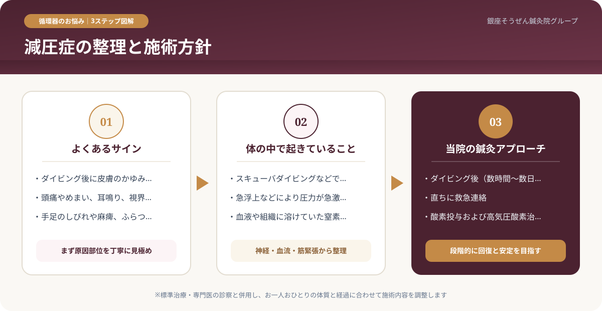

減圧症の鍼灸
急激な減圧で血液や組織に窒素などの気泡が生じる疾患です。急性期は鍼灸禁忌で高気圧酸素治療が最優先、治癒後の回復を支えます。
まず知っておきたい要点と改善の流れ

スキューバダイビングなどで高い水圧下にいた後、急浮上などにより圧力が急激に低下すると、血液や組織に溶けていた窒素ガスが肺から排出しきれず血管や組織内で気泡化します。この気泡が血流を塞いだり組織を圧迫したりすることで、皮膚症状・関節痛から、脳・脊髄の神経障害、肺塞栓様の呼吸困難、心症状まで引き起こします。脱水、疲労、深深度潜水、潜水直後の搭乗もリスクを高めます。
このようなお悩みはありませんか？
- ✓ダイビング後に皮膚のかゆみや関節・四肢の痛みが出た
- ✓頭痛やめまい、耳鳴り、視界の異常がある
- ✓手足のしびれや麻痺、ふらつきを感じる
- ✓胸の痛みや息苦しさ、強い全身疲労感がある
当院の施術アプローチ・改善の流れ
なぜ鍼灸で改善へ向かうのか？（作用機序の図解）
減圧症に対する鍼灸は、心拍変動・血管トーンを整える自律神経サポート機序を通じて、お体本来の回復力を引き出します。

循環器専門医の標準治療を絶対前提とし、手首や背部の安全な経穴へ低刺激でアプローチします。
心臓への過剰な交感神経刺激を穏やかに鎮め、心拍リズムと血管緊張の急変を抑えます。
ストレスで固まりやすい胸郭や横隔膜の緊張を解き、酸素摂取とリラックス反応を促します。
内服管理を厳守しながら、疲労やストレスが引き金となる症状不安の軽減を支えます。
院長YouTube解説・関連動画
減圧症の症状は、皮膚や四肢の痛みや神経や脳や肺の異変
減圧症の症状は、皮膚や四肢の痛みや神経や脳や肺の異変です。減圧症の症状は非常に幅広いです。中でも1番多い症状は、気分の落ち込みです。次にしびれや知覚異常、頭痛、過度な疲労、吐き気などが起こることの多い症状です。
症状が軽い場合は、皮膚に赤みやかゆみ、斑点が起きます。他にも四肢の関節痛や腫れや浮腫などが現れます。関節痛は肩関節から手指までの上肢に起きることが多いです。
さらに、斑点が大理石班の場合や腰痛がある場合は、減圧症が重症である可能性もあります。
症状が重い場合は、知覚や運動麻痺、膀胱直腸障害、意識障害や痙攣、片麻痺、胸痛、咳、息切れ、目眩や吐き気や聴力の低下などの症状が現れます。
減圧症の症状は、その発生が急激であるか、ゆっくりと進行するか、そして気泡が体のどの部分に影響を与えるかによって異なります。しかし、一部の症状は特によく報告されており、これらは減圧症の判断に役立ちます。
疼痛：減圧症の最も一般的な症状は、しばしば ベンズ"として知られる関節や筋肉の痛みです。この痛みは、単なる不快感から激しい疼痛まで変動します。通常、この痛みは潜水から数時間以内に現れますが、場合によってはすぐに出現することもあります。
皮膚の症状：多くの場合は、皮膚のかゆみ、発赤、発疹、または皮膚がまだらになるといった症状を経験します。これらの症状は、皮膚表面近くの血管に気泡が形成されることにより起こります。
神経学的症状：神経学的な症状は、減圧症の中でも最も深刻な症状です。これには、頭痛、めまい、耳鳴り、視覚障害、意識混乱、記憶喪失、意識の喪失、麻痺または感覚異常、手足の協調運動の困難などが含まれます。
呼吸器系の症状：これらの症状は、肺に影響が出る場合に見られます。これには、胸の痛み、呼吸困難、持続的な咳、喀血が含まれます。
消化器系の症状：これには、吐き気、嘔吐、腹痛、下痢などが含まれます。これらの症状は、腸やその他の消化器官の血流が阻害されるために起こる可能性があります。
心臓の症状：心臓に影響を及ぼす減圧症は、胸の圧迫感、心臓発作の症状、心不全の症状を引き起こすことがあります。
全般的な症状：全身的な疲労感、体力の低下、不明瞭な話し方、行動の変化なども減圧症の症状の一部となることがあります。
重要なことは、これらの症状は個々によって異なる可能性があり、また症状の重症度も人により異なるということです。症状はダイビング後すぐに現れることもあれば、数時間後や場合によっては数日後に初めて現れることもあります。減圧症は、適切な改善が行われない場合、深刻な状態へと進行する可能性があります。
もしダイビング後にこれらの症状のいずれかが現れた場合、または自身が減圧症を発症している可能性があると思われる場合は、直ちに専門家に連絡することが重要です。
減圧症にならないようにするためには、ダイビング前後に対策をすることが大事です。ダイビングをする前には、過度の飲食は控えることと十分に休むことを心がけましょう。
脱水状態になると、血液の巡りが悪くなり、気泡を肺に運ぶ能力が下がり減圧症を引き起こす可能性があります。さらに、脱水によって減圧症が起きると重症になるリスクが高いため、適度に水分補給をすることも大事です。
水分補給をするときは、塩分などのミネラルとブドウ糖を適度に含む飲料が早く吸収し、長い時間体にとどまってくれるためおすすめです。
ダイビングの直後は飛行機に乗らないようにすることも必要です。ダイビング直後は窒素が体の中に残っているため、体の中の窒素が膨張し減圧症になるリスクが高まります。窒素が抜ける時間を考えて、スケジュールを立てましょう。
減圧症の改善方法は、その原因である溶存ガスの過剰な体内からの排出を助け、症状を管理することに重点を置いています。このための基本的な方針は以下の通りです。
酸素投与：減圧症の初期の改善方法としては、酸素を供給することが一般的です。これにより、血液中の窒素の溶解度が下がり、体外への窒素排出が促進されます。酸素はマスクを通じて、または酸素室内で吸入します。
再圧縮法：これは、圧力室に入れ、体内の気泡が再び溶解するまで、適切な圧力をかけ続けるものです。その後、ゆっくりと圧力を解放していきます。このプロセスはしばしば酸素呼吸と組み合わせて行われます。
脱水状態の管理：脱水は、減圧症のリスクを増加させるため、適切な水分補給が必要です。
痛みの管理：痛みを和らげるために、非ステロイド性抗炎症薬（NSAIDs）や他の鎮痛剤が処方されることがあります。
症状管理：神経学的な症状や心臓の問題など、他の特定の症状がある場合、それらに対する専門的な治療が必要となることがあります。
以上が減圧症の基本的な改善方針ですが、具体的な改善方法は症状や健康状態により異なります。医師や救急専門家と緊密に連携し、適切な改善を受けることが重要です。
また、減圧症の改善後、体調が改善しても、医師の指示に従い、一定期間ダイビング活動を避けることが推奨されます。これは、体内の窒素レベルが完全に正常化するまで時間がかかるためです。減圧症を経験したダイバーが再びダイビングを始める前には、医師の承認を得ることが重要です。それは、減圧症の再発リスクを最小限に抑えるため、および全身の健康状態を評価するためです。
さらに、いくつかの研究では、特定の薬物（例えば、抗血小板薬や抗炎症薬）が減圧症の改善に有効であることが示されています。これらの薬物は血液の循環を改善し、組織の損傷を防ぎ、気泡の形成を防ぐことができます。
しかし、これらの改善方法はまだ研究段階にあり、全ての人に対して効果的であるとは言えません。したがって、具体的な方針は常に具体的な症状と健康状態、そして医師の専門的な判断に基づいて決定されます。
減圧症にかからないようにするためにダイビング中で最も大切なことは、急浮上を避けることです。これは、減圧症の原因のほとんどが浮上スピードが早いということであるためです。
さらに、深い場所や浅い場所を行ったり来たりするようなルートのダイビングを避けることも大事です。初めにその日に予定しているダイビングでも最大深度まで行き、その後、少しずつ水深を浅くするようにしましょう。
1日に何度もダイビングを行う場合、段々と最大深度や平均深度を浅くするようにすることも大事です。
減圧症の改善例
減圧症の改善方法は、症状の重さと全体的な健康状態によって変わります。以下に実際の例を挙げます。
まず、30歳の男性ダイバー、ジョンの場合を考えてみましょう。彼は深海ダイビングから帰ってきた後、間もなく関節痛とめまいを感じ始めました。彼のダイビングパートナーは即座に救急サービスに連絡し、彼はすぐに最寄りの病院へ運ばれました。
彼が病院に到着すると、まず医師はジョンの症状を詳しく尋ね、ダイビングの詳細、具体的な深度と時間、そして彼がどの程度早く水面に戻ったかを確認しました。これらの情報をもとに、医師はジョンが減圧症を発症していると判断しました。
まず、彼には酸素マスクを通じて純粋な酸素が提供されました。これにより、体内の窒素ガスがより速く排出され、気泡が縮小するのを助けます。次に、彼は再圧縮法を受けました。これは、体内の窒素ガスの溶解を促進し、気泡をさらに縮小させるためです。この間、彼のバイタルサインは常にモニタリングされ、必要な改善の調整が行われました。
この改善を行なった結果、ジョンの症状は数時間以内に大幅に改善しました。しかし、医師は彼に完全に回復するまでの間、ダイビング活動を避けるよう指示しました。さらに、彼の体調が安定した後も、定期的にチェックを受けるよう勧告しました。
この例は、減圧症の典型的な改善の進行を示しています。しかし、全ての症例がジョンのケースと同じように進行するわけではありません。減圧症の症状は個々により異なる可能性があります。また、他の問題を抱えている場合、改善のプロセスはさらに複雑になることがあります。
次に、50歳の女性ダイバーであるリンダのケースを考えてみましょう。彼女はダイビング後、ひどい胸痛と呼吸困難を感じ、すぐに救急サービスに連絡しました。リンダは高血圧の既往歴があり、これが減圧症の症状を増悪させている可能性がありました。
彼女が救急部門に到着した時、彼女は酸素を供給され、体の評価が行われました。その後、ハイパーバリック酸素法の開始が決定されました。しかし、彼女の高血圧のため、改善はより慎重に行われました。具体的には、リンダの血圧は定期的にモニタリングされ、彼女が使用していた血圧管理薬は、その効果が適切に続くよう調整されました。
さらに、彼女の胸痛と呼吸困難のため、心臓や肺に影響を与える可能性のある気泡の存在を確認するためにエコーカーディオグラムと胸部X線が行われました。これらのテストの結果、特別なケアが必要であることが判明しました。
リンダの症状は時間とともに改善しましたが、彼女の改善はジョンのケースよりも長く続きました。その間、リンダの体調は定期的にチェックされ、必要に応じて改善方法が調整されました。また、完全に回復した後も、ダイビングを再開する前に医師の許可を得るように指示されました。
これらのケースは減圧症の改善方法が個人によってどのように異なるかを示しています。最終的に、減圧症の改善方法は具体的な症状、既往歴、そして専門家の判断に基づいて行われます。
CRPS・末梢神経障害の遠隔・健側アプローチツボ図解
実際の施術ではお一人おひとりの体質・症状に合わせて選穴しますが、複合性局所疼痛症候群（CRPS）・神経障害性疼痛の安全な遠隔ケアの臨床でよく用いられる代表的なツボの目安です。

📌 代表的なツボの詳細一覧表を開く（6穴） ▼
| ツボ名 | 位置の目安 | 主な狙い | セルフケアの注意点 |
|---|---|---|---|
| 外関（がいかん） | 手の甲側、手首から指3本分肘寄り | 上肢の神経過敏・放散痛の遠隔調整 | アロディニア（接触痛）がある患側は避け健側を使います。 |
| 内関（ないかん） | 手のひら側、手首から指3本分肘寄り | 交感神経依存性の痛み・不安感の鎮静 | 強く押し込まず軽く添える程度にします。 |
| 合谷（ごうこく） | 手の甲、親指と人差し指の間 | 中枢性の下行性疼痛抑制系の活性化 | 健側への穏やかな刺激で全体の痛みを和らげます。 |
| 陽陵泉（ようりょうせん） | 膝の外側下、丸い骨の斜め下のくぼみ | 下肢の神経周囲の筋緊張・しびれ感の緩和 | 電撃痛が出ない優しい圧に留めます。 |
| 三陰交（さんいんこう） | 内くるぶしの上から指4本分上 | 末梢の微小循環改善・夜間痛による不眠ケア | 温めと併用すると末梢血流が整いやすくなります。 |
| 太衝（たいしょう） | 足の甲、親指と人差し指の骨の間 | 自律神経の過緊張・足先のピリピリ感調整 | 皮膚感覚が過敏な場合は触れずに遠隔穴を選びます。 |
国際査読論文の科学的エビデンス
国際的な医学データベース（PubMed・Cochrane等）で報告されている複合性局所疼痛症候群（CRPS）・神経障害性疼痛の安全な遠隔ケア領域の代表的な査読済み鍼灸研究をまとめています（標準治療との併用や研究上の限界を含めて正確に掲載）。
📚 査読論文データ・PubMed出典リンクを開く（4件） ▼
| 年・研究デザイン | 対象・規模 | 主な結果 | 限界・出典 |
|---|---|---|---|
| 2019年 大規模多施設RCT | 慢性安定狭心症 398名解析（標準薬物療法併用） | 16週時点の4週間発作減少は実鍼群がシャム群比5.18回・待機群比5.63回多く有意改善（P<0.001）。 | 標準薬物療法への併用（補完）試験であり単独療法ではない。 JAMA Intern Med (PMID: 31355870) |
| 2007年 シャム対照RCT | 本態性高血圧 140名完了（ドイツ・24時間ABPM） | 治療終了時の24時間血圧はシャム比SBP -6.4mmHg・DBP -3.7mmHg有意低下（P<0.001）。 | 終了3〜6か月で治療前水準へ戻るため継続ケアが必要。 Circulation (PMID: 17548730) |
| 2015年 メタ解析 | 高血圧 23 RCTs（n=1,788） | 降圧薬＋実鍼は降圧薬＋シャム比でSBP -7.47mmHg・DBP -4.22mmHg有意低下。鍼単独は降圧薬と同等・根拠不十分。 | 盲検化・異質性に課題。降圧薬の自己中断は厳禁。 PLoS One (PMID: 26207806) |
| 2025年 メタ解析 | 心拍変動（HRV）10 RCTs（n=744） | 自律神経全体の適応指標SDNNを有意に改善、重篤な有害事象なし。 | LF・HFには不確実性が高くさらなる検証が必要。 Front Neurosci (PMID: 41230507) |
参考文献・出典
- 2019年 大規模多施設RCT（慢性安定狭心症 398名解析（標準薬物療法併用））— JAMA Intern Med (PMID: 31355870)
- 2007年 シャム対照RCT（本態性高血圧 140名完了（ドイツ・24時間ABPM））— Circulation (PMID: 17548730)
- 2015年 メタ解析（高血圧 23 RCTs（n=1,788））— PLoS One (PMID: 26207806)
- 2025年 メタ解析（心拍変動（HRV）10 RCTs（n=744））— Front Neurosci (PMID: 41230507)
よくある質問（FAQ）
Q. ダイビング後に関節痛やしびれが出たのですが、鍼灸でほぐしてもらえますか？▼
Q. 減圧症を予防するためにダイビングで最も大切なことは何ですか？▼
あわせて読まれる関連疾患（循環器のお悩み）
腎臓や肺・神経などの小型血管に炎症が起こる指定難病です。ステロイド・免疫抑制治療を最優先とし、寛解・安定期の体調管理を補完的に支えます。
生まれつき腸管で葉酸を吸収できず貧血や神経症状を起こす希少疾患です。医療機関での葉酸補充療法を最優先に安定期を支援します。
好酸球の異常増加により全身の細い血管に炎症が生じる指定難病です。専門医の長期治療を最優先とし、寛解・安定期のしびれや緊張を穏やかにケアします。
首の骨の中を通る椎骨動脈の内膜が裂ける重篤な血管疾患です。突然の頭痛は即救急受診が必須で、首への施術や操作は絶対禁忌です。
夜間や安静時に心室細動を起こし得る遺伝性不整脈疾患です。循環器専門医での厳重な管理を最優先に、安定期のストレス管理を支援します。
おへそが飛び出し腸管などが脱出する状態です。激しい痛みや戻らない膨らみは緊急受診が必須、安定期の腹圧対策等を補完支援します。
CLINICAL RECOVERY CASES
✨ 実際の臨床改善事例・回復経過を見る
銀座本院をはじめ各院での実際の改善事例を症状別に絞り込んでご確認いただけます。
おひとりで悩まず、まずはご相談ください
銀座本院・川口・大宮・横浜・博多・田無の各院でご予約を承っております。